Kijiji Sustainable Rural Development
Research in Kasisa, Tanzania
Long-term field research, testing and community co-design with Kijiji ISS, Tanzanian students and Kasisa residents.
Since 2022, SMU students and faculty have worked with Kijiji Innovative Sustainable Solutions, Tanzanian university students and residents of Kasisa Village on locally identified priorities for sustainable rural development.
All of the technical projects are part of the Humanitarian Engineering program. The archive groups the work into four connected areas: Community and Site Environment; Materials and Sustainable Construction; Water and Sanitation; and Collaborative Fieldwork. A smaller Travel Experience section records aspects of living and working together in Tanzania.
1. Community & Site Environment
Community, land, climate and energy
Community Co-Design
Community priorities and local knowledge guide the direction, testing and evaluation of the research.
2022
The program began with a community needs assessment to identify priorities before the larger field program was developed. Meetings were small and informal, often taking place outdoors with residents near their homes or work areas. These conversations established the relationships and project directions that later field seasons expanded.


2024
Community members worked directly with project teams in prototype testing, construction, material evaluation and field decisions.
2025
The field season concluded with a full-day participatory mapping exercise bringing the different projects back together at the community and site scale. Community members, students and project partners mapped flooding and drainage, water, construction, access and safety, followed by a community-led walk to visit the places residents considered most relevant. The week ended with a shared lunch for everyone who had worked together.


2025 mapping: additional photographs
Additional photographs from the participatory mapping process, retained with filenames in the captions so individual images can be identified and corrected easily.


Land Mapping & Surveying
Low-cost surveying, remote sensing and GPS methods for land mapping and farmland identification.
2022
The first mapping work tested a high-accuracy RTK device at the Kasisa site and established methods for later precision field surveys. The team worked directly with Tanzanian partners to set up the equipment, collect site points and begin building a more accurate spatial record of the land.


2023
RTK land surveying continued as the team developed the site mapping work and strengthened methods for accurate field measurement.
2024
RTK/GPS field measurement expanded as part of site and cadastral data collection.


Site Environment & Energy
Climate monitoring, drainage, green infrastructure and small-scale solar energy.
2024
Small-scale solar power was incorporated into the low-energy water-pump project, linking energy research directly to water access.
2025
Flooding became a direct concern after structural problems at the site during the previous year. The team investigated site and weather conditions and designed and constructed the first phase of a drainage ditch to support future development and reduce the effects of standing and moving water.

Climate data and site environment fieldwork
Additional 2025 photographs from the climate and site-environment work.


2. Materials & Sustainable Construction
Materials and building systems
Compressed Earth Blocks
Sustainable construction using local soils, including soil testing, weathering, surface protection and housing systems.
2022
Initial soil testing began to assess locally available material for compressed earth block construction. Before and during the field season, the team learned basic soil characterization methods and then applied them to soils collected at the Kasisa site.


2023
Soil testing and community workshops continued. A CEB press was brought from Dar es Salaam and the team produced the first successful blocks.
2024
Students and community members prepared soil mixtures, produced blocks with a manual press, checked dimensions and construction quality, and used more than 500 blocks in construction.


2025
Research continued through refinement of block recipes, building tests and soil-testing methods, with increasing attention to weathering and climate impacts.


New Roofing Materials
Material development and field testing using agricultural waste and bio-based binders.
2023
Initial work explored new roofing materials using locally relevant resources and fabrication methods.
2024
Teams combined rice husks with different mixtures, formed prototype tiles, compared production methods and finished samples, and assembled tiles into a small prototype roof.


2025
Roofing-material development and field testing continued in 2025, building on the agricultural-waste and bio-based material research.


Sustainable Fencing
Development and field testing of locally appropriate fencing solutions.
This project strand investigates practical fencing systems suited to local materials, construction methods and site needs. Field-year documentation will be added as the work develops.
Gathering Place & Shade Structures
Community gathering and shade structures developed as part of the sustainable construction work.
2023
The field team constructed a community gathering place, extending the materials research into a built project.
2024
Construction work continued with a shade structure, providing another opportunity to develop and test practical building approaches on site.
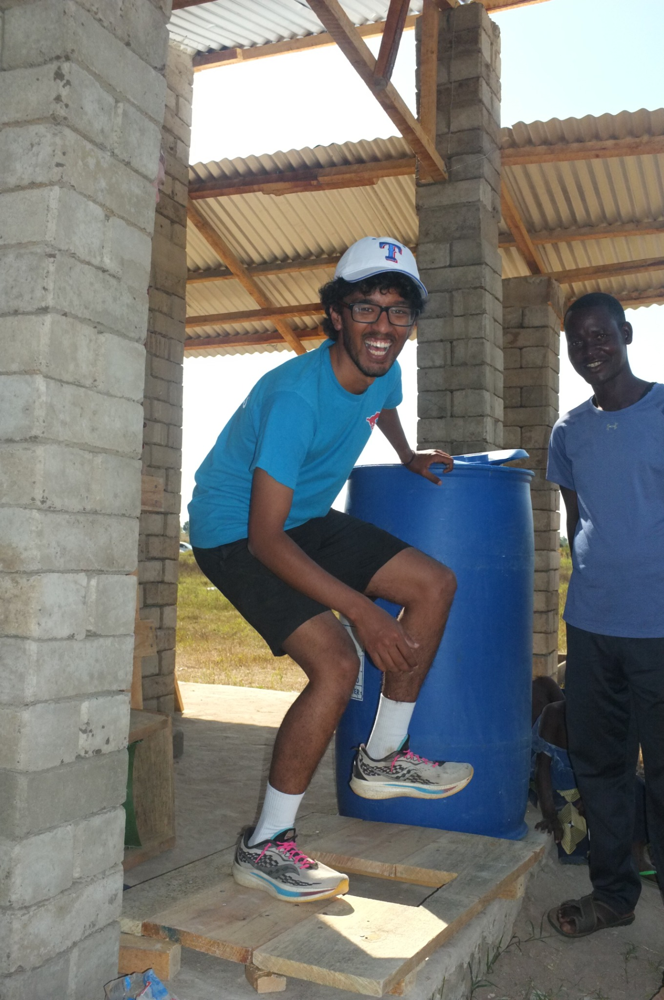
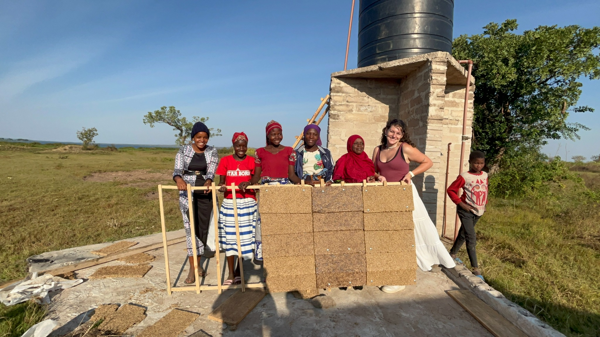
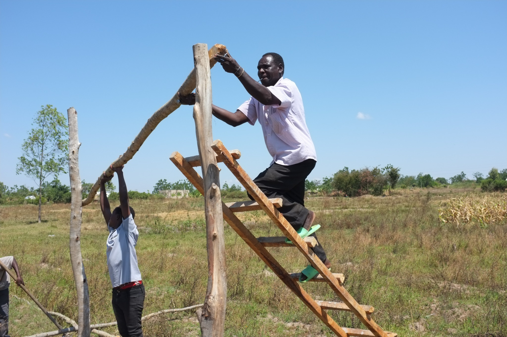
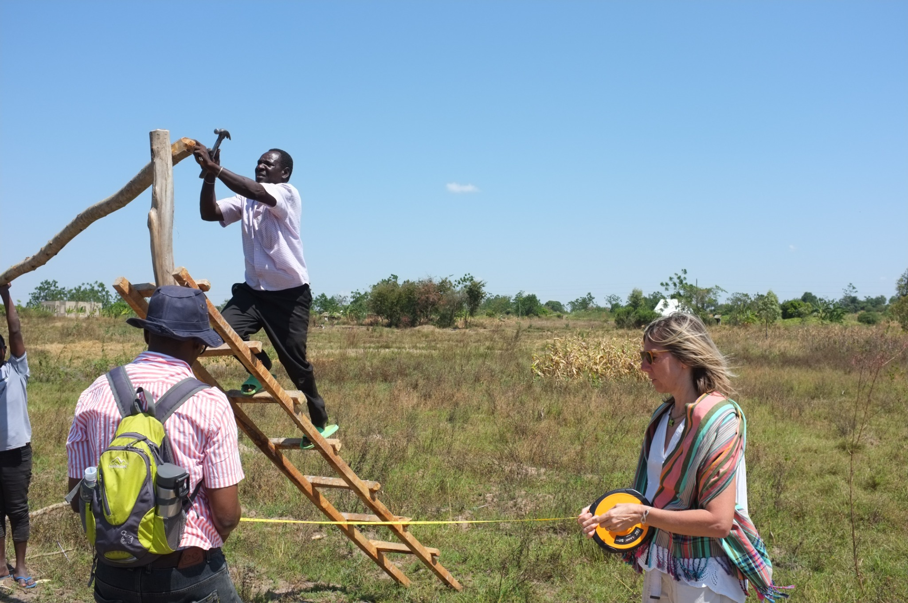
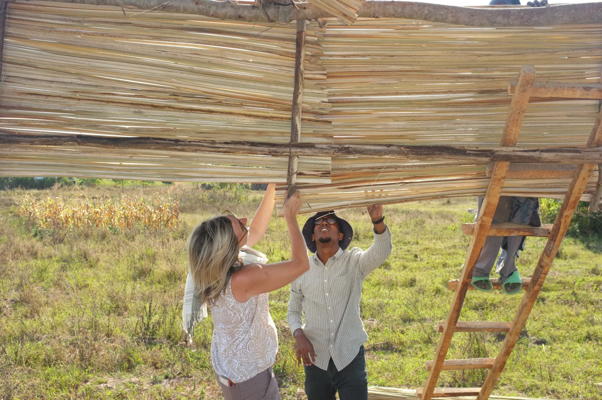
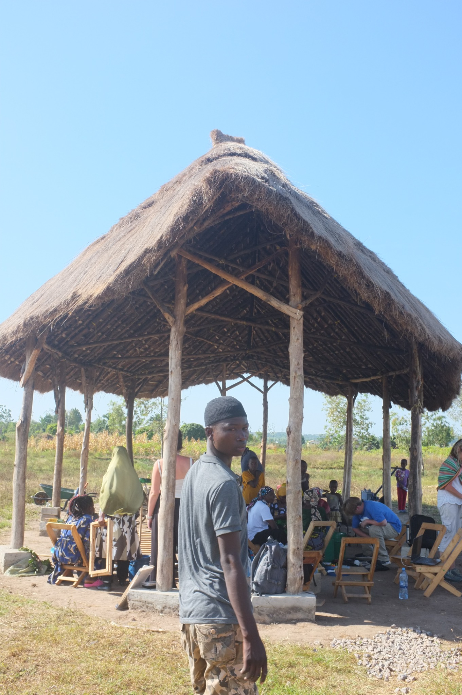
3. Water & Sanitation
Water access, filtration and sanitation
Water Procurement & Filtration
Low-cost household filtration together with water procurement, storage and pumping systems.
2022
Early work addressed water procurement and storage, including construction of a water tank at the site.
2023
Work developed along two linked tracks: water pumping and procurement, and low-cost household water filtration.
2024
The team continued installation and testing of a solar-powered, low-energy water pumping system with Tanzanian partners. In parallel, students and community members prepared locally available filter media, assembled bucket-based household filters and tested the filtration process. Community participation helped assess both operation and suitability for local use.


2025
The water team expanded its work from the previous year by visiting households to understand how families obtained water and the different access problems they experienced. The team also continued to refine the household clean-water filtration system, testing ways to reduce its cost while keeping the design practical for local use. Experienced community women took an increasingly confident role in the work, alongside students and water and soils specialists Dr. Andrew Quicksall and Dr. Buberwa Tibe.
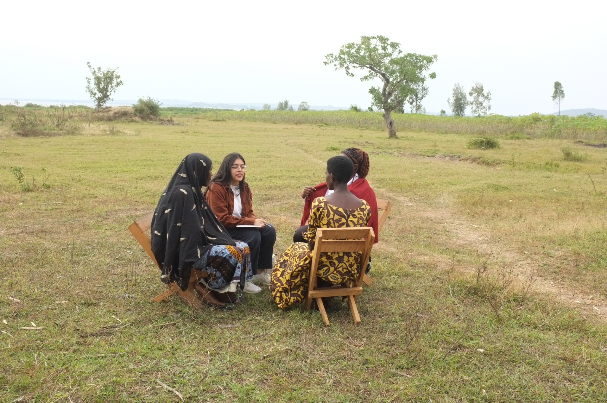
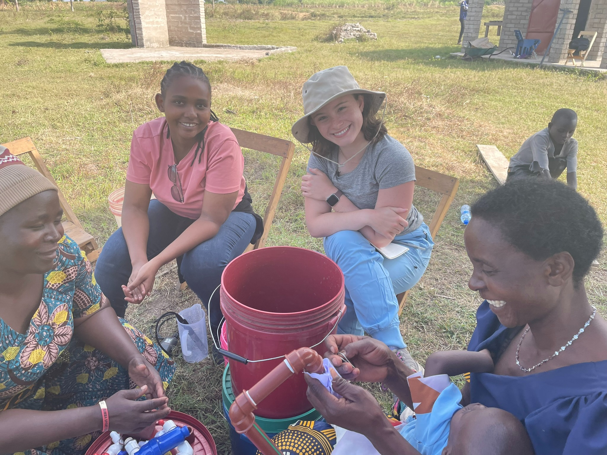
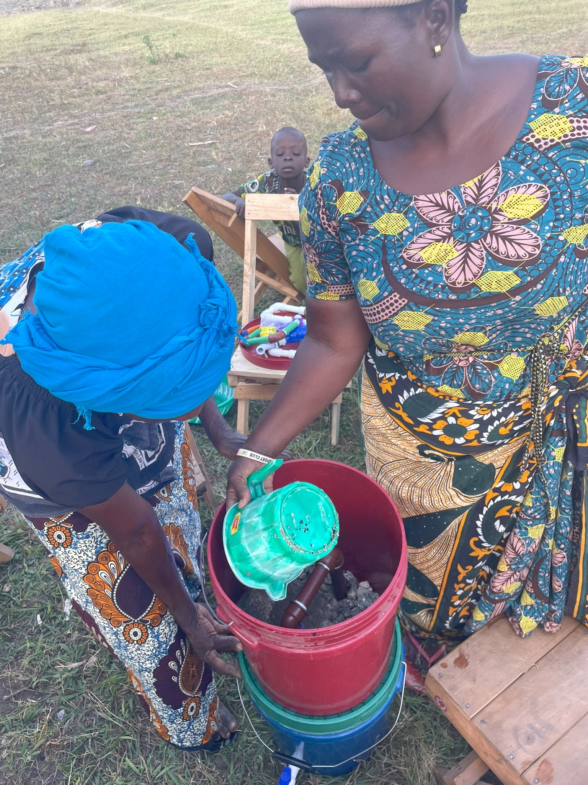
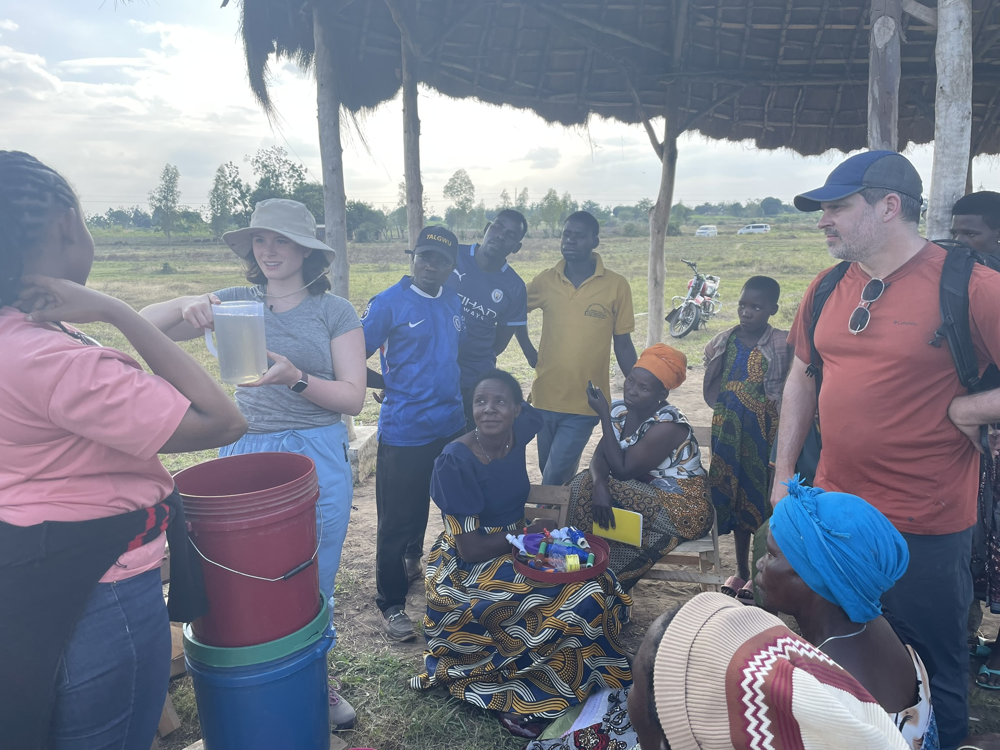
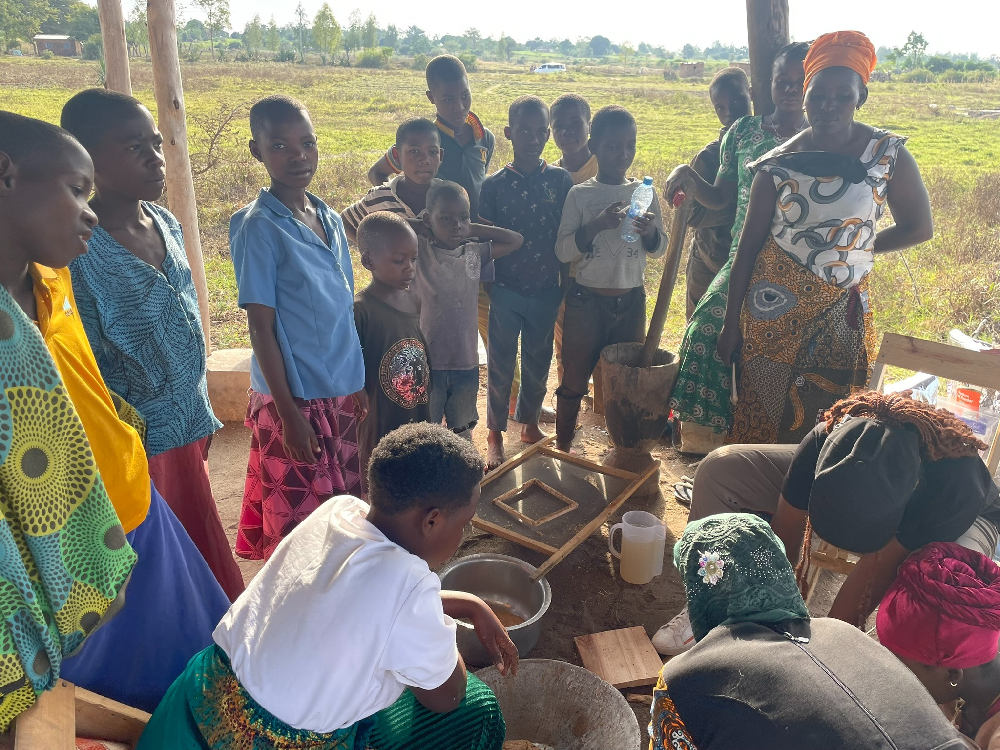
Sanitation & Waste
Low-cost sanitation developed through co-design, prototyping, composting and waste-management research.
2024
The team built and tested an initial composting toilet prototype, gathered community feedback, revised components and continued into construction of a more permanent sanitation structure.


2025
The toilet team developed several new innovations, including a hand-washing basin that drained into the wet side of the toilet and a vertical shaft that made use of the holes in the compressed earth blocks. The work showed how ideas and materials developed in one project could inform another.

4. Collaborative Fieldwork
Education, economic development and governance
Education and Technology
Collaborative learning and investigation using digital tools in local schools.
2024
The team tested Minerva internet technology at Kasisa Secondary School. Students worked in small groups using connected laptops to investigate questions, develop ideas and present their work.


Economic Development
Community-level data collection supporting research on local economic conditions and opportunities.
2024
Field collection of GPS data for an economic development study led by Dr. Osang.
2025
A substantially larger team expanded the economic data-collection project and community-level field surveying.
Community Governance
Collaboration with community leaders and local partners supports decisions about priorities, participation and the longer-term development of the work.
Uploaded Photo Review
This review gallery includes every original photograph currently available from the uploads for this site through 2025. Captions retain the original filename so any photograph that is in the wrong project can be identified quickly. Photographs already used elsewhere on the site are intentionally retained here as a cross-check.
Show all uploaded photographs (192)


.JPEG)


.JPEG)


.jpeg)
.jpeg)

.jpeg)
.jpeg)
.jpeg)

Continuing field research
This version of the archive concludes with the 2025 field season. The 2026 fieldwork will be added as the next chapter.